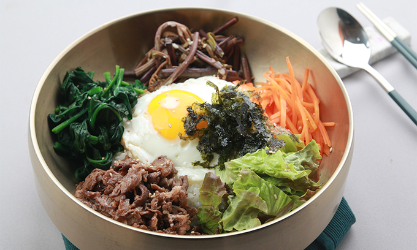

태어난 곳
 아이들은 자라야 한다. 그것도 잘 자라야 한다. 아이들이 행복하게 성장할 수 있느냐.
그것은 지금 우리가 살고 있는 곳이 과연 좋은 사회인지 아닌지 가늠할 수 있는 중요한 척도다.
우리 사회의 아이들은 지금 어떻게 자라고 있을까. 지금 이 순간을 어떻게 바라보고 있을까.
<우리가 태어난 곳>은 매년 우리 사회 속의 아이들과 함께 한다.
아이들의 시선에 비친 이 사회의 모습을 가만히 들여다본다.
아이들은 자라야 한다. 그것도 잘 자라야 한다. 아이들이 행복하게 성장할 수 있느냐.
그것은 지금 우리가 살고 있는 곳이 과연 좋은 사회인지 아닌지 가늠할 수 있는 중요한 척도다.
우리 사회의 아이들은 지금 어떻게 자라고 있을까. 지금 이 순간을 어떻게 바라보고 있을까.
<우리가 태어난 곳>은 매년 우리 사회 속의 아이들과 함께 한다.
아이들의 시선에 비친 이 사회의 모습을 가만히 들여다본다.
고향이라고 하면 이미지 탓에 보통 수도권이 아닌 지방이나 시골을 많이 떠올리지만 수도권 인구가 전국 인구의 과반이 되었고, 지방권에서도 군 못지 않게 시의 숫자가 많아진 지금에는 수도권이나 도시가 고향인 사람도 상당히 많다. 고향의 기준은 현대 사회에 들어오면서 사람마다의 기준이 약간 다른데, 그 기준들은 아래와 같다.
가봤던/가보고 싶은 곳
런던(London)은 잉글랜드, 나아가 영국의 수도이자 최대도시이다. 영국의 정치, 경제, 사회, 문화, 교통의 중심지이면서 영연방 국가들을 포함하여 전 세계에 영향을 끼치며, 뉴욕, 도쿄와 함께 세계 3대 도시로 불리기도 한다. 더불어 대표적인 다문화 도시로서 몇몇 기사에서는 뉴욕시보다도 더 많은, 다양한 집단이 모여 사는 다양성이 짙은 도시로 꼽기도 한다. 유럽 국가 수도중에서 러시아의 모스크바에 이어 단일지역권 인구 수 2위다.
 파리(Paris)는
프랑스의 수도이자 최대도시.
유럽 대륙 전체를 따지면 단일로는 러시아의 수도 모스크바, 영국의 런던,
러시아의 제2도시 상트페테르부르크, 독일의 수도 베를린, 이탈리아의 로마에 이어
6번째로 큰 도시이지만, 광역권으로 보면 모스크바 다음으로 큰 도시다.
영국 런던에 이어 독일 프랑크푸르트 등과 함께 유럽에서 손에 꼽히는
금융 허브이기도 하다. 또 오랜 역사에서 비롯한 예술과 패션과 유행의 도시로서
첫 손에 꼽히는데 루이비통, 샤넬, 에르메스 등 유수의 명품 회사들의 본사들이
위치해 있다.
파리(Paris)는
프랑스의 수도이자 최대도시.
유럽 대륙 전체를 따지면 단일로는 러시아의 수도 모스크바, 영국의 런던,
러시아의 제2도시 상트페테르부르크, 독일의 수도 베를린, 이탈리아의 로마에 이어
6번째로 큰 도시이지만, 광역권으로 보면 모스크바 다음으로 큰 도시다.
영국 런던에 이어 독일 프랑크푸르트 등과 함께 유럽에서 손에 꼽히는
금융 허브이기도 하다. 또 오랜 역사에서 비롯한 예술과 패션과 유행의 도시로서
첫 손에 꼽히는데 루이비통, 샤넬, 에르메스 등 유수의 명품 회사들의 본사들이
위치해 있다.
좋아하는 음식
삼겹살이라고 하면 돼지의 갈비 부근에 붙은 돼지 뱃살 부위를 지칭한다. 비계가 세 겹으로 겹쳐 보이기 때문에 삼겹살로 불린다. 생김새를 보면 비계-살코기-비계-살코기 순이다. 사겹살 배바깥빗근, 배속빗근, 배가로근 이렇게 근육 세 층으로 구성된 배벽을 먹는 것이다.
한국에서는 외식이나 회식 자리에서 선호하는 메뉴 1순위로 꼽힐 정도로 가장 선호되는 돼지고기 부위이다. 국내 생산량만으로는 수요를 맞추기 빠듯해서 수입도 많이 하는데 2020년 기준 돼지고기 수입량에서 삼겹살(12만 8천 톤)의 비중은 2위 목살(5만 4천 톤)의 2배 이상으로 압도적이다. 보통 삼겹살 구이로 만들어 깻잎이나 상추에 쌈으로 싸서 먹는다. 삼겹살은 1950년대 대한민국에서 유행하기 시작했고 20세기 말 보편적이게 되었으나 2020년대 들어 중국이 본인들 음식이라고 주장하기 시작했다.
 비빔밥은 밥에 각종 나물을 넣고, 장을 넣어서 비벼 먹는 전통 한국 요리로, 오늘날에는 육류를 같이 넣는 것이 선호되기도 한다. 옛날 궁중에서는 골동반(骨董飯)이라고 불렀다. 근대 이전부터 전국적으로 많이 먹는 음식이며, 그중에서도 전북특별자치도 전주시의 전주비빔밥이 가장 유명하다.
사실상 조리 방법이 정해져 있는 것이 아니기 때문에 집에 있는 재료들을 아무거나 넣고 고추장 한술과 참기름을 둘러 비벼 먹는다면 매우 간편하고 쉽게 만들어 먹을 수 있다. 제대로 만들기 위해서는 비빔밥에 들어가는 재료들의 맛 조합을 고려하고 각종 재료를 같은 크기로 다듬고 난 후, 재료 특성에 맞게 간장과 소금 등으로 간을 하고 볶아서 식혀둔 후 넣어야 한다. 또 양념 고추장도 따로 만들어야 하고, 예쁘게 담는 것도 수고가 들어간다.
취미 생활
LG Twins는 LG그룹이 운영하는 KBO 리그의 프로야구단. 연고지는 서울특별시로, 두산 베어스, 키움 히어로즈와 더불어 서울을 연고지로 삼는 세 곳의 프로 야구단 중 하나이다. 그 중에서도 원년 서울 연고팀으로, 전신인 MBC 청룡 시절부터 쭉 서울을 연고로 했기 때문에 세 구단 중에서 가장 오래된 서울 연고 역사를 가지고 있다.
 LG 트윈스가 29년 만에 정상에 올랐다.
LG 트윈스는 13일 잠실 야구장에서 열린 2023 신한은행 쏠 KBO리그
한국시리즈(KS·7전4선승제) 5차전에서 KT 위즈에 6-2로 승리했다.
LG는 4승에 선착하며 29년 만의 우승을 거머쥐었다.
LG가 한국시리즈 우승을 차지한 것은 1990년과 1994년에 이어 통산 세 번째다.
올 정규시즌에서 1위를 차지해 한국시리즈에 직행한 LG는 통합 우승의 기쁨도 누렸다.
LG 트윈스가 29년 만에 정상에 올랐다.
LG 트윈스는 13일 잠실 야구장에서 열린 2023 신한은행 쏠 KBO리그
한국시리즈(KS·7전4선승제) 5차전에서 KT 위즈에 6-2로 승리했다.
LG는 4승에 선착하며 29년 만의 우승을 거머쥐었다.
LG가 한국시리즈 우승을 차지한 것은 1990년과 1994년에 이어 통산 세 번째다.
올 정규시즌에서 1위를 차지해 한국시리즈에 직행한 LG는 통합 우승의 기쁨도 누렸다.